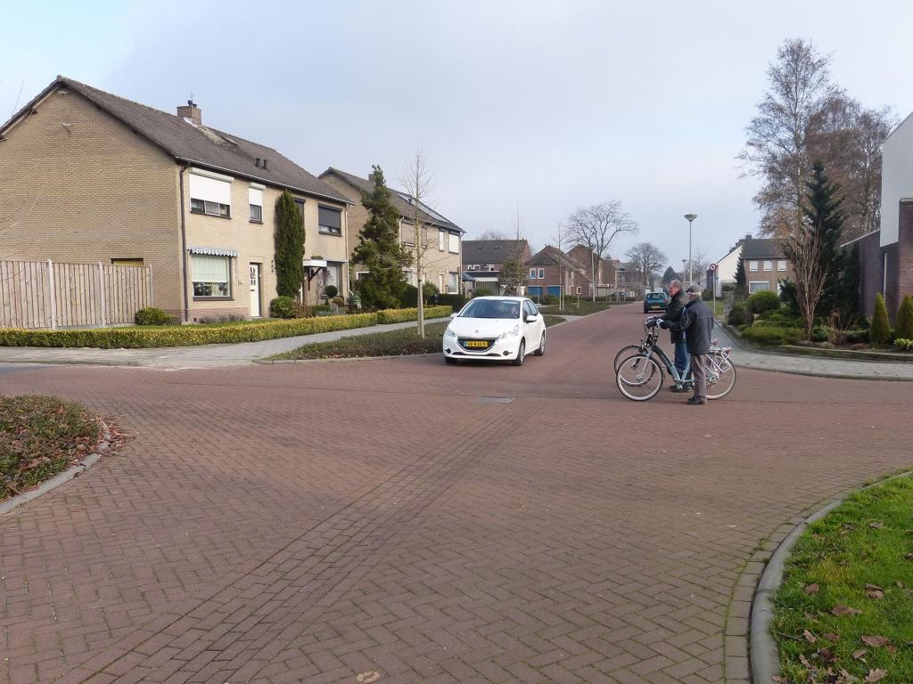
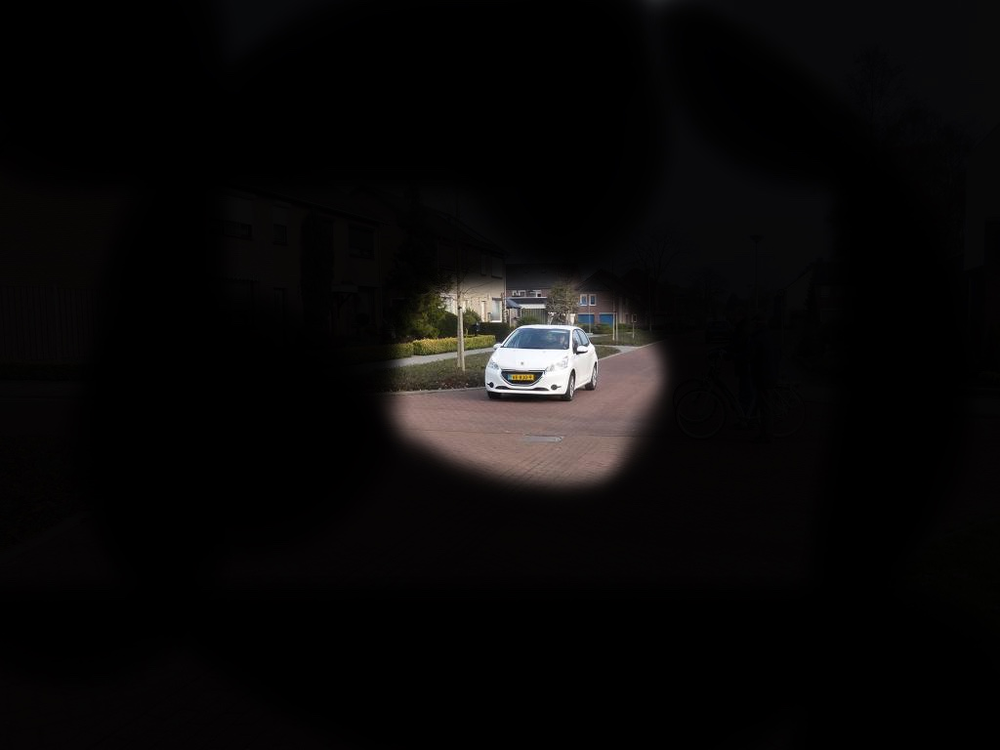
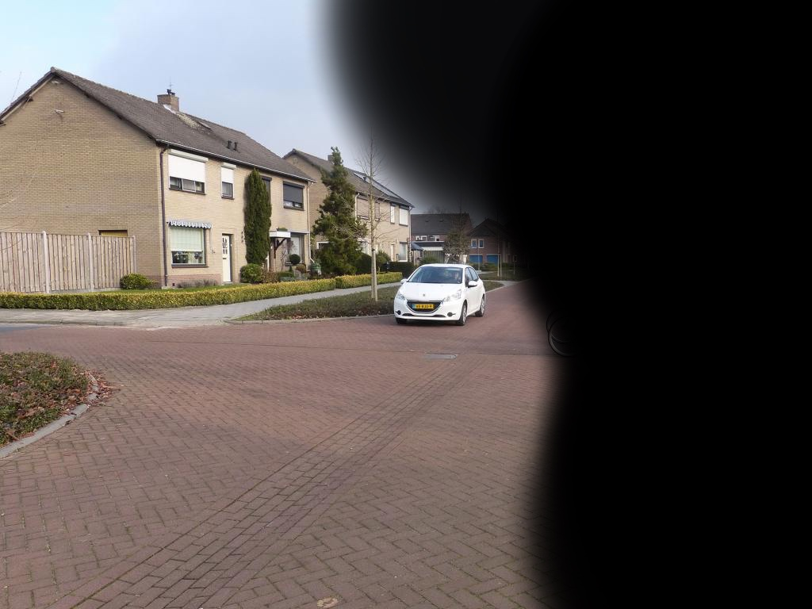

Zien
Zie hier hoe een slechtziend persoon in een bepaalde scenario's kijkt.
Hoe ziet een slechtziend persoon in een winkelstraat
Wat valt op? (10% zicht)
Glaucoom
Bij glaucoom wordt de oogzenuw beschadigd. Hierdoor ontstaat geleidelijk verlies van uw gezichtsveld.
Meestal is de oogboldruk bij glaucoom te hoog, maar de oogboldruk kan ook normaal zijn. U heeft dan ‘normale druk glaucoom’. De behandeling bestaat uit het verlagen van de oogdruk. Ook bij normale druk glaucoom is dat vaak nodig.


